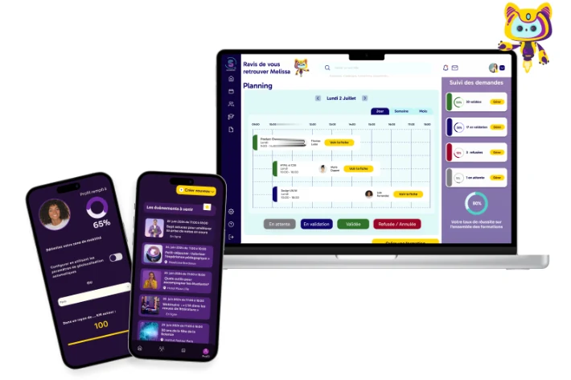
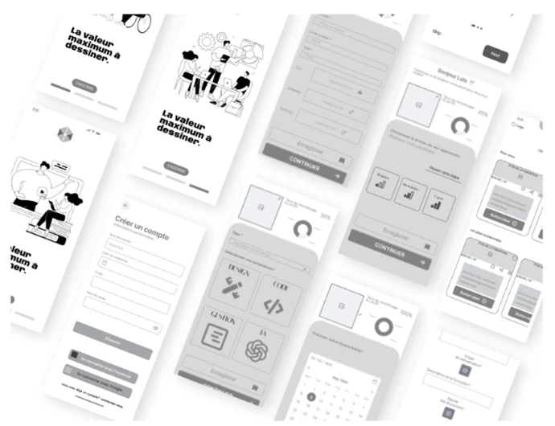
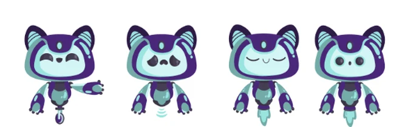
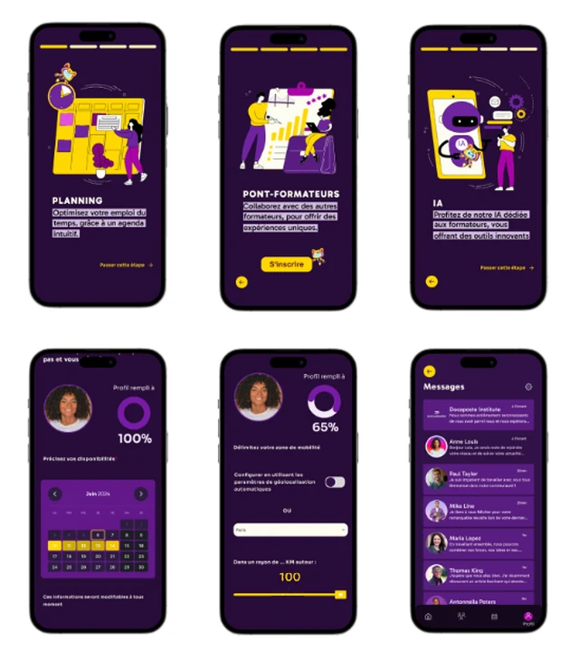

Framing
- ProblemFreelance trainers juggle several calendars, feel isolated and lose time on repetitive tasks; training organisations lack visibility on their availability.
- What I didA full design thinking cycle in a team of three: interviews with 8 trainers, personas, user journeys, benchmark, story mapping, wireframes, design system, illustrations and usability tests.
- ImpactA mobile app for trainers and a desktop version for organisations: one synchronised calendar, a trainer community and an AI assistant, Sphérito.
Context
Context and question

During the Docaposte UX/UI bootcamp, we designed an app that connects tech training organisations with the trainers they want to hire. It has two access profiles, one for organisations and one for trainers, each with its own dashboard and features.
Target: freelance trainers and training organisations.
How might we create a simple, intuitive space where trainers and training organisations find each other and keep track of missions?
Value proposition: a broader connection between trainers, and an easy way for them to follow their tasks.
Method
Approach and methodology
We followed a design thinking process over 12 weeks: 8 weeks of UX, then 4 weeks of UI.
| Phase | Methods | When |
|---|---|---|
| Empathise | User research, questionnaire, insights | Weeks 1–3 |
| Define | Personas, user journeys, story mapping, problem definition | Weeks 2–5 |
| Ideate | Benchmark, information architecture, brainstorming, Crazy 8s, user flow, MVP | Weeks 5–8 |
| Prototype | Wireframes, UI kit, design system, prototype | Weeks 9–11 |
| Test | Usability tests and improvements | Weeks 11–12 |
- 8trainers interviewed (5 women, 3 men)
- 2personas
- 3platforms benchmarked
- 5MVP features
Story mapping and MVP
Story mapping helped us organise and prioritise user stories. The MVP had to include, at minimum:
- Onboarding
- A personal profile
- Planning and timetable
- Notifications and messages
- Creating and publishing a training sheet
Data
Personas and user journeys
We analysed the interviews by theme (tools, training and community, new technologies) for trainers and for training organisations, then built two personas.
Persona 1
Lola, 37, freelance trainer
Design thinking trainer with 10 years of experience, self-employed. She wants to grow her skills and organise her work better despite unstable schedules.
- Unstable training schedules and last-minute validation
- Cancellations and too few participants
- Scattered tools, lack of time, no exchanges with colleagues
Persona 2
Mélissa, 45, head of pedagogy
15 years in a training organisation. She wants a dashboard with all the key information to manage teaching day to day.
- No visibility on trainers' schedules
- Handling the unexpected, between remote and on-site sessions
- No tool to replace absent trainers quickly
User journey: managing notifications

Lola expects full control over notifications (turn them on or off, mute them), to see at a glance who a message is from, and a clear display. A second journey, accepting a request, showed the need for reply templates.
Key insights
Key insights and benchmark
Insight 1: Trainers feel isolated
Freelance trainers miss sharing good practices with peers.
- Evidence
- Interviews · n = 8
- Decision
- Create a dedicated community: sharing, webinars, good practices
- Result
- Community space in the app
Insight 2: One calendar for everything, without exposing private life
Activities are spread across several tools, and personal events must stay private.
- Evidence
- Interviews + personas
- Decision
- A modular workspace that syncs calendars, with widgets
- Result
- Synchronised planning in the MVP
Insight 3: Recurring tasks are tedious
Writing training sheets and answering emails takes time away from teaching.
- Evidence
- Interviews + user journeys
- Decision
- A generative AI assistant built into the app
- Result
- Sphérito, the AI mascot
Benchmark
We compared matching platforms rather than training tools only: Litmos, Superprof and Malt. We kept step-by-step profile creation, a dashboard overview, gamification of progress, filter categories and, for a second version, comparing profiles in the catalogue.
Solution
Solution, design system and app
The solution
- A modular workspace that syncs several calendars, with widgets to make the interface pleasant to use.
- A community to share information, organise webinars and exchange good practices.
- Sphérito, a generative AI mascot that helps write training sheets and email replies.
Wireframes

Brand and design system
The name blends savoir (knowledge) and the sphere, a symbol of unity. The logo uses blue for trust, violet for creativity and mauve for harmony, with a neon effect for energy. Titles use Gabarito and body text uses Sora. Blue is dedicated to training organisations and violet to trainers; yellow is for calls to action, green for validation and red for alerts.

The trainer mobile app is in dark mode: less eye strain, better for evening use and longer battery life on OLED screens. The desktop version for organisations is in light mode, better suited to large screens and office environments.
Illustrations and Sphérito
We drew every illustration in Adobe Illustrator from reference images of people interacting, then adjusted them to the colour palette and exported them as SVG.


The app

What usability tests showed
- Some tap targets were too small, and twice users got stuck on a screen with no way forward.
- Screens designed by three people lacked visual consistency, so we re-harmonised them mid-project.
- Trainers testing their own flows kept the team focused on real needs.
Retrospective
What I learned and what I would do differently
- Set up a design system at the start of any team project: it ensures consistency and saves rework.
- Keep flows as simple as possible; affordance comes first.
- Designing two experiences, dark mobile for trainers and light desktop for organisations, means making each choice for a context of use, not for taste.
- Accessibility is hard to reach fully, so keep checking the product works for as many people as possible.